explore
Yapay Zeka Destekli Akıllı Seyahat Yoldaşınız
Seyahat Hayalleriniz, Dakikalar İçinde Gerçek Bir Rotaya Dönüşsün.
auto_awesome
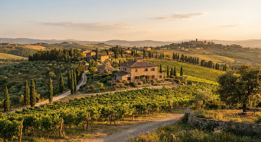
1. Gün • 10:30
Mercato Centrale Gizli Fırınları
local_cafe
Özel İpucu
1
Uffizi & Gizli Avlular
2
Trattoria da Burde Öğle Molası
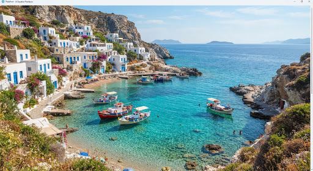
location_on Bodrum & Kaş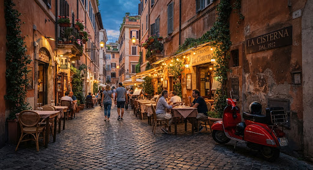
location_on Roma Sokakları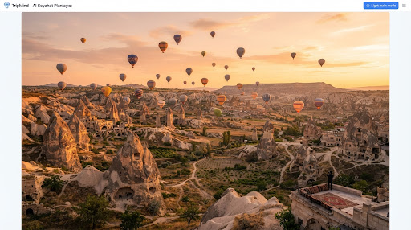
location_on Kapadokya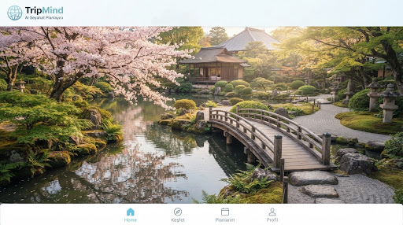
location_on Kyoto Bahçeleri
Neden TripMind?
Seyahat Etmek Keyif Olmalı, Yorgunluk Değil.
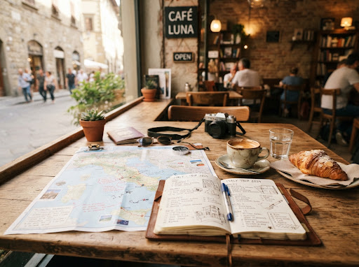
Saatlerce Blog Okumak Yerine Tek Tıkla Rota
tune
Özelleştirilebilir
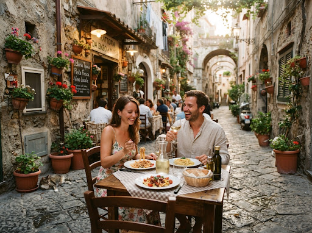
Gizli Kalmış Lokasyonlar & Yerel Lezzetler
verified
Turist tuzaklarından arındırılmış öneriler
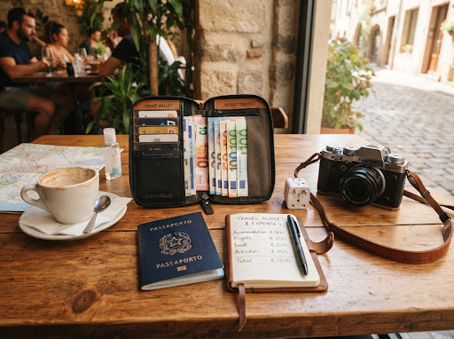
Dürüst Bütçe & Zaman Tasarrufu
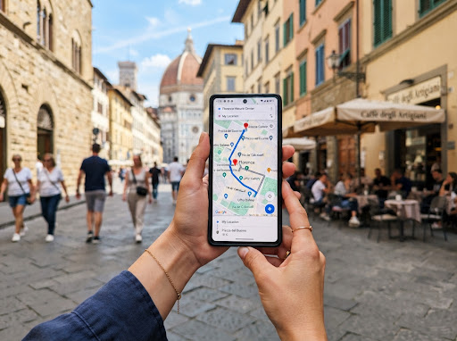
Her An Cebinizde, Tamamen Esnek
İlham Alın
TripMind İle Hazırlanmış Canlı Rota Örnekleri
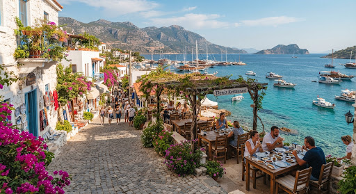
Deniz & Lezzet
Ege & Akdeniz Butik Kaçamağı
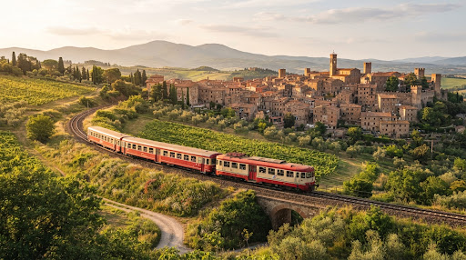
Sanat & Kahve
Kuzey İtalya Tren Yolculuğu
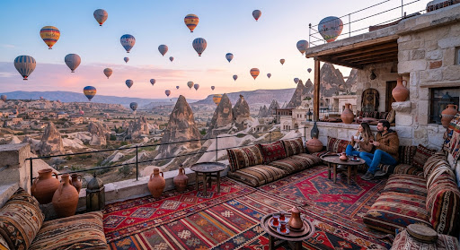
Macera & Fotoğraf
Kapadokya Deneyimi
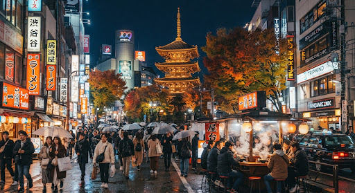
Tapınak & Lezzet
Tokyo & Kyoto Kültür Turu
Zahmetsiz Süreç
3 Kolay Adımda Yola Çıkın
1
Hayalinizdeki Rotayı & Tarzınızı Söyleyin
chat_bubble_outline
Doğal dille veya filtrelerle anlatın
TripMind Saniyeler İçinde Optimize Etsin
magic_button
Saatlik harita & bütçe planı anında hazır
3
Bavulunuzu Toplayın & Keyfini Çıkarın!
flight_takeoff
Stressiz ve spontane bir seyahat keyfi
navigation